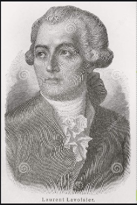
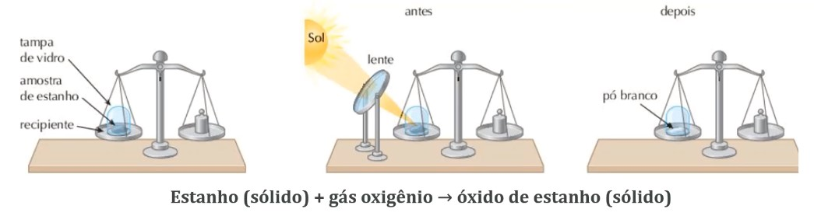
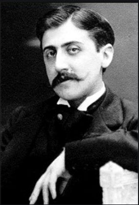

Quando a química ganhou importancia e o "método científico"
foi adotado, no século XVIII, estudos e experimentos conseguiram
explicar como as reações químicas ocorrem
e como as subistancias se comportam.
Com isso, construiram as leis ponderais que é a
relação das massas com as reações quimicas:
Lei de Lavoisier:
- Lei de Conservação das Massas
Criada por Antoine Laurent Lavoisier (1743-1794)
e disse que: “Em uma reação química feita em recipiente
fechado, a soma das massas dos reagentes é igual à soma
das massas dos produtos.”
Lavoisier chegou a essa conclusão porque ele realizou várias
reações químicas e pesou cuidadosamente as massas das substâncias
envolvidas no início e no final de cada reação.

“Na natureza nada se cria, nada se forma, tudo se transforma.”

Observe que a soma das massas dos dois reagentes é exatamente igual à
massa do produto.

Lei de Proust:
- Lei das Proporções Constante
Criada por Joseph Louis Proust (1754-1826)
dizendo que: “A proporção em massa das substâncias que reagem e que
são produzidas numa reação é fixa, constante e invariável.”
depois de diversas experiência de pesagem, Proust constatou que após as
reações químicas, as substâncias (reagentes e produtos) envolvidas apresentavam
a mesma massa proporcional, ou seja, eram constantes.
"A verdadeira viagem de descobrimento não consiste em procurar
novas paisagens, e sim em ter novos olhos."


Isso ocorre em todas as reações químicas, as massas das substâncias reagem sempre numa mesma proporção.